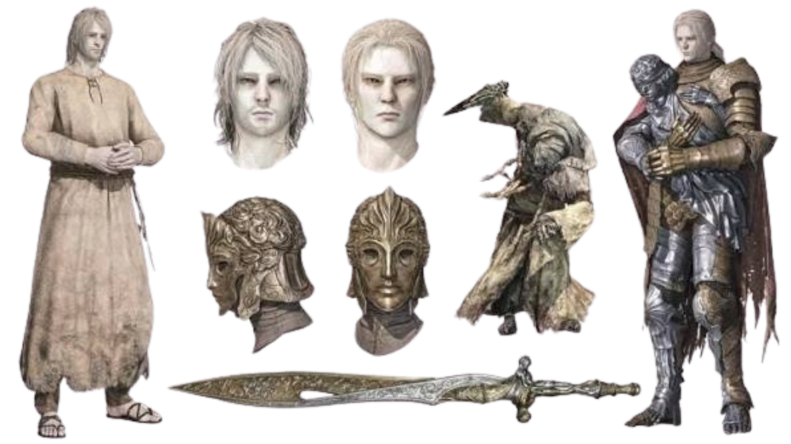
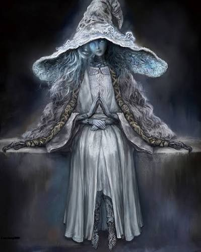
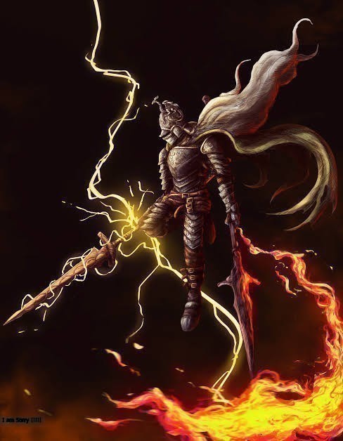
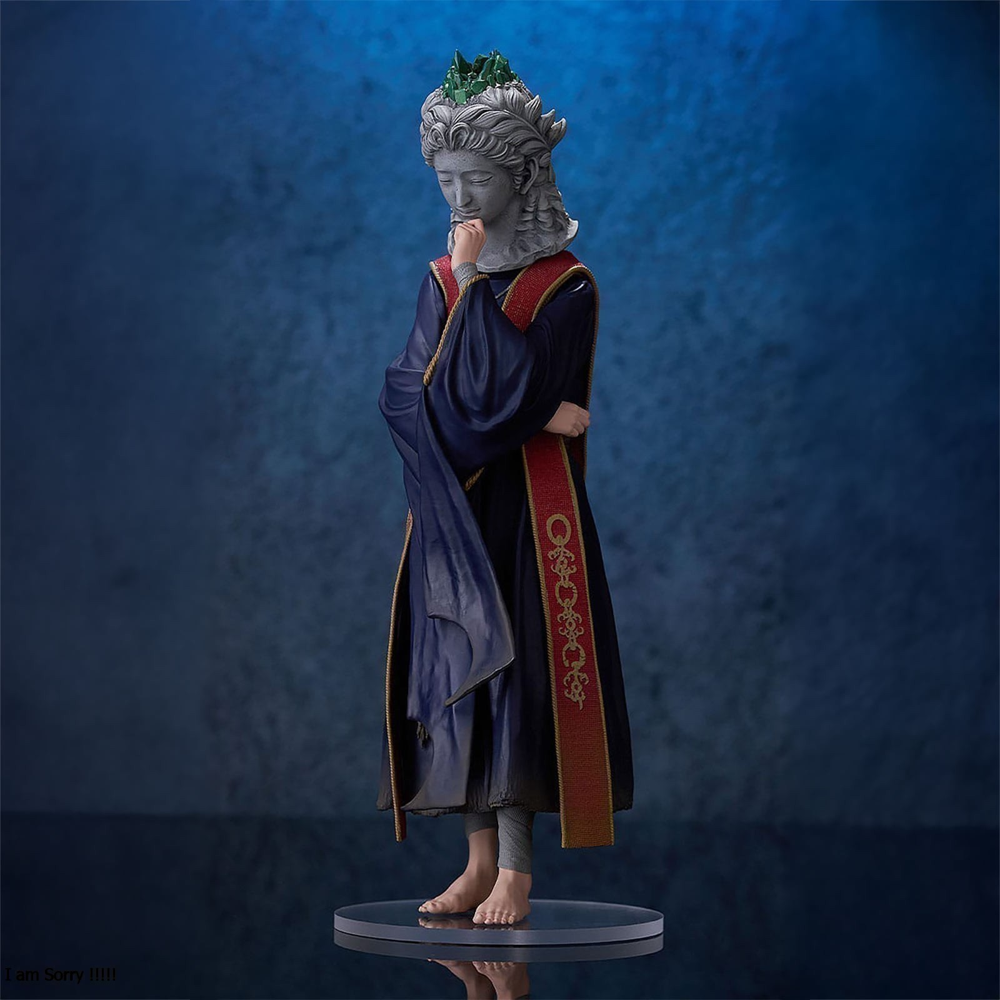

latest news, updates, and reviews from nexus games


Ranni the Witch is an NPC in Elden Ring. Ranni the Witch is a mysterious figure who first introduces herself as Renna. Upon meeting her again at Three Sisters, she reveals her true name and eventually will recruit you into her servitude, sending you off in search of a hidden treasure. This page covers vital information for Ranni's questline for Elden Ring.

Fire Knight is a Humanoid Enemy in Elden Ring. Fire Knight is an enemy that was exclusively added to the Shadow of the Erdtree DLC. The Fire Knights serve directly under the command of Messmer, being the only ones who truly understand him. They are intimately familiar with his serpent-like flames and the suffering tied to his cursed existence. These enemies can only be encountered within the Shadow Keep. Named fire knights that do not respawn include Wego, Kood, and Salza. Adorned in a pointed helm and armor featuring a red cape and twin golden snakes around the neck that enhances Messmer's flame incantations, each knight hails from a renowned family of the Erdtree's upper echelons. However, they were shunned and exiled from their homes after swearing loyalty to Messmer as their master. Fire Knight Queelign devoted his all to the crusade, and remade his greatsword in the shape of the lance wielded by his liege—aspiring to become a second Impaler. The spirit of a Fire Knight can be summoned for aid in battle by using the Fire Knight Hilde Spirit Ashes.

Sorceress Sellen is a Merchant and NPC in Elden Ring. She can be found inside the Waypoint Ruins, far east from where you first arrive in Limgrave. She can teach you Sorceries. She can also be made available as an NPC Summon for specific battles. As part of her quest she wishes to restore the primeval current of glintstone sorcery to Raya Lucaria.